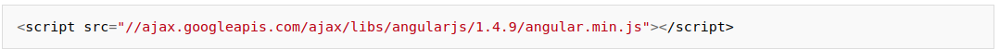
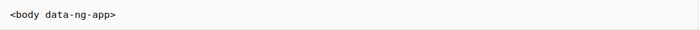

Para utilizar AngularJS, en nuestro html debemos incluir la librería javascript angular.js. Podemos cogerla directamente de las google apis con

En algún sitio de nuestro html que abarque todo el html que queremos manejar con angularjs debemos poner un atributo ng-app o data-ng-app (son lo mismo). Puede ser el tag
, el tag o cualquier otro tag que queramos. En nuestro ejemplo vamos a usar el tag

Dentro de app.js vamos a escribir controladores de AngularJS. Estos controladores no son más que funciones javascript que reciben como parámetro la variable $scope definida por AngularJS. Todos los atributos que pongamos a esa variable $scope formarán parte del modelo de datos de nuestra aplicación y serán datos accesibles fácilmente desde la parte html.
tendremos disponible en html una variable greeting cuyo contenido es 'hello'. En el html, podemos poner algo como esto
En el input indicamos con data-ng-model="greeting" que el contenido del input es el de la variable greeting. AngularJS se encarga de hacer los cambios necesarios en ambos sentidos. Si escribimos en la caja de texto, modificará la variable y al modificar la variable, actualizará el párrafo p. A continuación tienes lo que quedaría